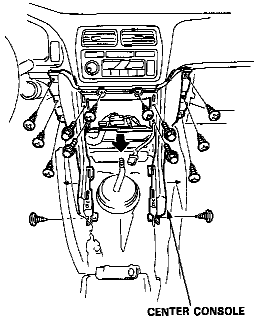

Console: Service and Repair

1. To remove the center console, first remove the:
- Center console panel
- Center armrest
- Stereo radio/cassette
- Glove box lower panel
- Glove box
- L. glove box cover
- Dashboard lower cover
2. Remove the 10 screws and 4 bolts, then remove the center console.
NOTE:
- Take care not to scratch the console and dashboard.
- Do not drop the screws and bolts inside the dashboard.
3. Installation is the reverse of the removal procedure.